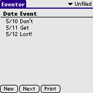
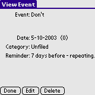
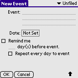
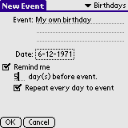
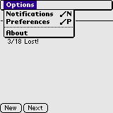
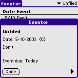
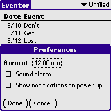

Eventor is a Personal Event Reminder manager. It assists you in remembering all your important personal forthcoming events, such as birthdays, anniversaries and the like. Eventor is not a calender program - use the builtin Datebook for calendering. The builtin Datebook can do what Eventor does - but Eventor does it more intuitively :o)
Some features of Eventor:
Installation of Eventor is like installing any other Palm OS program:
When the synchronization is done you will have a 'Eventor' icon in the Unfiled category on your Palm PDA. Feel free to move Eventor to another category.
If you use Microsoft Windows 95 or better you might want to install the Eventor Conduit as well:
 On the main screen all registered events are shown. Tap on the name of an event to view the event and details of this event. Tap New to add an event. Tap Next to show details of the next forthcoming event. The Print button will only be shown if you have Palm Print installed. Tap the button to get a printout of all events. This have been tested on my Tungsten|T using a bluetooth connection to a MPI bluetooth printer adapter driving an Epson Stylus Color 640 printer.
 Tapping an event on the main screen brings up the View Event dialog with details about the event. Tap Done to return to the main screen. Tap Edit to edit the details of the event. Tap Delete to delete the event - you will be asked to confirm your action. The number in parenthesis after the date is the age of the event. This is the number of years passed since the first time this event occured. F.ex. for a persons birthday the age would be the age of the person.
 Tapping New on the main screen or Edit on the View Event dialog brings up the Edit Event dialog. If this is a new event all fields are empty.
Enter a short description of the event in the Event field. Set the date of the event by tapping the Not Set button. If you want to be reminded of the event, check the Remind me checkbox. Enter the number of days you want to be reminded before the event is due in the day(s) before event field. If you want to be reminded everyday from the day(s) before event date to the day the event is due, check the Repeat every day to event checkbox.
You can place the event in a category by selecting the category in the upper right corner of the screen.
Tap OK to add the event, Cancel to discard the event and return to the main screen.
Example. I want to add my own birthday, I want to be reminded 5 days before and everyday there after until the event is due. My birthday is 12th of June, 1971. So I set the category to the builtin Birthday category enter a description ("My own birthday") in the Event field. The date is set to 6-12-1971 (American notation). I check the Remind me checkbox. I wanted to be reminded 5 days before the event (day(s) before event) and everyday there after (Repeat every day to event).
The date notation used on this dialog and the main screen is based upon your preferences.
 If you bring up the menu on the main screen you have the following options:
 If you select the Notifications menu item you will be given a list of forthcoming events. Use the little arrows in the lower right corner (not shown) to show the next/previous event. This dialog is also brought up once a day if there are any pending events. So you do not need to launch Eventor to see forthcoming events. Tap Done to dismiss the dialog.
 Select Preferences from the main menu to change the behaviour of Eventor. Eventor brings up the Notifications dialog at the time specified in Alarm at. Default is to bring up the dialog at midnight. Check the Sound alarm box to have Eventor play a sound when the Event list is shown. The sound is only played at the time specified in the Alarm at box. Check the Show notifications on power up box to show the Event list each turn you turn on your PDA. This requries Palm OS 4.0 or better, though. Tap OK to save the new preferences, Cancel to discard changes.
That is all there is to it. Enjoy! :o)